gs <- readRDS("gameStats.RData")
gs <- type.convert(gs, as.is = TRUE)
head(gs)Predictive Modeling
R
ggplot2
college football
sports analytics
machine learning
A variety of machine learning models to predict beating the spread.
Continuing with the streak of posts about college football posts, here I finally get into developing some models to predict the winning team and margin of victory of college football games. For this analysis, I was inspired by this post that mentioned a leader board for people who picked winners from the 2021-2022 season. Reminds me of Kaggle competitions, which I did once for fun and wrote about it.
I also found this published paper both extremely interesting and helpful because it lays out in detail the author’s analytic methodology for building their predictive model. The first part of this post is my attempt at replicating their technique using a different data source (collegefootball.com’s API) and using data from the 2017-2020 seasons to predict games of the 2021 season. Spoiler, my initial tree-based models don’t perform nearly as well as theirs, and I eventually try a neural network with much better success.
Get the Data
First, I’ll load data I previously obtained via the API I mentioned above. If you want to see how to make those API calls, I explain it in this post. The data in /games/teams has a bunch of game result data that are similar to the data used in the article above.
I also want to get the list of all of the FBS teams because I want to filter out the games played against non-FBS teams. There’s a bunch of data in that table, but I’m really only interested in the school column.
fbs <- readRDS("fbs_teams.RData")
head(fbs)Now I’ll get a vector of all of the game IDs from the first table in which a non-FBS team played. Here are the first three.
library(dplyr) # I'm going to need to do some data wrangling
fcsIDs <- gs %>% filter(!school %in% (fbs %>% .$school)) %>% .$id
fcsIDs[1:3][1] 400944827 400944827 400933835Now I apply the filter and separate out some of the columns. For example, the totalPenaltiesYards column is formatted as penalties-yards, so for example 3-25. I’ll then create a new column that divides one of those values by the other so that I get a single yardsPerPenalty value. I’ll also convert the time of possession into minutes and get rid of columns I no longer need.
library(tidyr) # needed for the separate function below
gs <-
gs %>%
filter(!id %in% fcsIDs) %>%
separate(totalPenaltiesYards,
into = c("penalties", "penaltiesYards"), convert = TRUE) %>%
separate(completionAttempts,
into = c("passCompletions", "passAttempts"), convert = TRUE) %>%
separate(possessionTime, into = c("posMM", "posSS"), convert = TRUE) %>%
mutate(posTime = posMM * 60 + posSS,
yardsPerPenalty = penaltiesYards / penalties,
passEfficiency = passCompletions / passAttempts,
yardsPerPlay = (yardsPerPass + yardsPerRushAttempt) / 2) %>%
select(-totalYards, -posMM, -posSS, -fourthDownEff, -thirdDownEff)I found that there are a number of NAs in the data. For this demonstration, I’ll just convert them all to 0. If I was cleaning this data for an actual competition or to try to beat Vegas, I’d take a much harder look at those NAs and treat them carefully.
gs[is.na(gs)] <- 0I also found that there’s a game ID that’s repeated, so I’ll filter out the repeat.
# there's an id that's repeated - there should be two games for each ID
gs %>% group_by(id) %>% count() %>% filter(n > 2)# take a look at that ID
gs %>% filter(id == 401309547)# filter out the ID with zeros in the rushingTDs column
gs <- gs %>% filter(!(id == 401309547 & rushingTDs == 0))In the article, they did some feature engineering that I’ll replicate here.
gs <-
gs %>%
mutate(offensePoints = (rushingTDs + passingTDs) * 7 + kickingPoints,
offenseYards = netPassingYards + rushingYards) %>%
arrange(id)They also created some features for one team based on how the other team performed. Doing this in the original gs dataframe made my head hurt, so I split it into separate dataframes for the home and away teams. While I’m at it, I’ll also calculate MOV, the margin of victory.
home <- gs %>% filter(homeAway == "home")
away <- gs %>% filter(homeAway == "away")
home <-
home %>%
mutate(
defensePointsAllowed = away$offensePoints,
defenseYPPAAllowed = away$yardsPerPass,
defenseYPRAAllowed = away$yardsPerRushAttempt,
defensePassYardsAllowed = away$netPassingYards,
defenseRushYardsAllowed = away$rushingYards,
defenseYardsPerPlayAllowed = away$yardsPerPlay,
forcedPenaltyYards = away$penaltiesYards,
forcedTO = away$turnovers,
MOV = points - away$points
)
away <-
away %>%
mutate(
defensePointsAllowed = home$offensePoints,
defenseYPPAAllowed = home$yardsPerPass,
defenseYPRAAllowed = home$yardsPerRushAttempt,
defensePassYardsAllowed = home$netPassingYards,
defenseRushYardsAllowed = home$rushingYards,
defenseYardsPerPlayAllowed = home$yardsPerPlay,
forcedPenaltyYards = home$penaltiesYards,
forcedTO = home$turnovers,
MOV = points - home$points
)I also wanted to get each team’s Elo score,which I found in the /games data via the API. For some reason, I grabbed the pregame Elo score instead of the post-game Elo, but that’s fine. I’ll account for that later. I’ll also filter out those games using the game IDs in the home dataframe. The /games data also contains a boolean neutral_site, which will be useful. There’s always a home and away team in every game (as indicated in the homeAway column) even if the game is played on a neutral site. If I want to correctly factor in whether a team has a home field advantage, I’ll need to account for those games played at a neutral site.
eloSite <- readRDS("eloSite.RData") %>% as_tibble()
eloSite <- eloSite %>% filter(id %in% (home %>% .$id))
head(eloSite)Now I’ll combine that data with the home and away dataframes.
home <-
home %>%
left_join(eloSite %>%
select(id, home_team, home_pregame_elo, neutral_site),
by = c("id" = "id", "school" = "home_team")) %>%
rename("elo" = "home_pregame_elo")
away <-
away %>%
left_join(eloSite %>%
select(id, away_team, away_pregame_elo, neutral_site),
by = c("id" = "id", "school" = "away_team")) %>%
rename("elo" = "away_pregame_elo")The authors explained that their methodology didn’t use raw game results. Instead, they used seasonal cumulative means. Let’s take rushingTDs for an example. Say a given team in week 1 had 1 rushing TD. Week 1 results are unchanged. If they scored 2 rushing TDs in week 2, then the cumulative mean becomes 1.5 and so on through the weeks. At the beginning of the next season, reset and start over. Hopefully, that makes sense.
# re-combine the home and away dataframes into one long dataframe
ha <-
bind_rows(home, away) %>%
arrange(school, year, week)
# I want to calculate the cumulative MOV mean, but I also need to preserve the
# actual MOV as the response variable.
mov_actual <- ha %>% .$MOV
# now calculate the cumulative means
cmeans<-
ha %>%
group_by(school, year) %>%
summarize_at(vars(c(3:52)), cummean) %>%
ungroup()
head(cmeans)There are a few columns from the ha dataframe, like the game ID, schools names, the week, the year, etc. that I don’t want to have a cumulative mean - I want the original columns. So I’ll select those columns and combine them with the cumulative means. Then I’ll add the actual MOV results for use as the predictor variable.
ha <- bind_cols(ha[, c(1:3, 5, 6, 55, 56)], cmeans[, c(3, 5:52)])
ha$MOV_actual <- mov_actual
head(ha)I also want to include the spread as a predictor variable, which I can get via the API from /lines.
spread <- readRDS("spread.RData")
head(spread)Now I’ll deal with the neutral site column since the dataframe is merged back together. I’m going to make a HFA column that’s a 1 for the home team at their home field, a -1 for the away team, and a 0 for both teams at a neutral site. Then I’ll add the pre-game spread for the home and away teams.
ha <-
ha %>%
mutate(HFA = case_when(
homeAway == "home" & !neutral_site ~ 1,
homeAway == "away" & !neutral_site ~ -1,
neutral_site ~ 0)) %>%
left_join(spread, by = "id") %>%
mutate(spread = ifelse(homeAway == "home", home_spread, -home_spread))Something else I want to add is each team’s seasonal win/loss record in the for of the percent of games they’ve won. I keep adding more and more predictors. We’ll find out later if any of it will even be useful.
ha <-
ha %>%
mutate(wins = ifelse(MOV_actual > 0, 1, 0)) %>%
group_by(school, year) %>%
mutate(games = row_number(),
cumwins = cumsum(wins),
winPct = cumwins / games) %>%
select(-wins, -games, -cumwins)Ok, this is where things get a little complicated. But first, a sidebar. I wrote this code over the course of a few weekends. Until this particular project, I’d never dealt with data where there are “sides” to think about. It took me a while to wrap my mind around it, and this is code from my first efforts where I was just trying to find “a way” to get things done. Pure brute force. Later you’ll see that I came up with a much better (and faster) way to do what I about to demonstrate. All part of the sausage-making the way I look at it.
The idea here is that I wanted to account for home field advantage. It’s a definite thing with a measurable effect. I’ll demonstrate using the home dataframe from earlier. I’ll remove games played at a neutral site, and get the mean margin of victory.
home %>%
filter(!neutral_site) %>%
summarize(meanMOV = mean(MOV))Home teams win by almost 4 points on average. We can also check to see if the mean MOV is statistically significant. I’ll use the Wilcoxon signed rank test because I’m certain the data are not normally distributed - they’re football scores, after all. I’ll do a one-sided test where the null hypothesis is that the mean MOV is 0.
wilcox.test(home %>%
filter(!neutral_site) %>% .$MOV,
alternative = "greater")
Wilcoxon signed rank test with continuity correction
data: home %>% filter(!neutral_site) %>% .$MOV
V = 3355196, p-value < 2.2e-16
alternative hypothesis: true location is greater than 0Based on that p-value, we reject the null hypothesis at the 95% confidence level. Right, so home field advantage is a real thing, and I need to account for it.
To do that, I wanted to get away from the idea of home team and away team and instead think of them more generically by randomly picking one team as “the team” and the other as “the opponent”. My ha dataframe is still grouped by school and year, so I’ll ungroup it and call it my end-of-week results data - it’s a mental trick so I think about things differently. Then I’ll get all of the unique game IDs.
eowResults <- ha %>% ungroup()
ids <- sort(unique(eowResults %>% .$id))Next, I’ll loop over the ID. For each ID, I’ll start by picking out the common columns (id, week, and year), and then identify one team as team1 and the other as team2. For the first game, and for column-naming consistency as I build this new dataframe df, team 1 will be “the team”, and team2 will be “the opponent”. For all other games, I pick a random number between 0 and 1. If it’s greater than or equal to 0.5, team1 is “the team” and team2 is “the opponent”. Otherwise, it’s the reverse.
for (i in ids){
common <- eowResults %>%
filter(id == i) %>%
slice(1) %>%
select(id, week, year)
team1 <- eowResults %>%
filter(id == i) %>%
slice(1) %>%
select(-id, -week, -year)
colnames(team1) <- paste(colnames(team1), "team", sep = "_")
team2 <- eowResults %>%
filter(id == i) %>%
slice(2) %>%
select(-id, -week, -year)
colnames(team2) <- paste(colnames(team2), "opponent", sep = "_")
if (i == min(ids)){df <- bind_cols(common, team1, team2)}
else{
ifelse(runif(1) >= 0.5,
newRow <- bind_cols(common, team1, team2),
newRow <- bind_cols(common, team2, team1))
df <- df %>% bind_rows(newRow)}
}Like I said, brute force. Now I have some redundant columns, so I’ll drop drop them before going further.
df <-
df %>%
select(-homeAway_team, -homeAway_opponent, -neutral_site_team,
-neutral_site_opponent, -MOV_actual_opponent, -HFA_opponent,
-home_spread_opponent, -spread_opponent, -home_spread_team)The final big step is to add a bunch of new columns to represent the difference in one team’s average performance versus the average performance of the other team. Think of it this way. If a team scores on average 30 points a game, you might think that’s pretty good. However, if the teams they’ve played have on average given up 40 points, then that 30 points doesn’t look as impressive. I want to account for that for a number of statistics, so that’s what I do here.
df <-
df %>%
mutate(
diffPointsScored = offensePoints_team - defensePointsAllowed_opponent,
diffPointsAllowed = defensePointsAllowed_team - offensePoints_opponent,
diffYPPAOff = yardsPerPass_team - defenseYPPAAllowed_opponent,
diffYPPADef = defenseYPPAAllowed_team - yardsPerPass_opponent,
diffYPRAOff = yardsPerRushAttempt_team - defenseYPRAAllowed_opponent,
diffYPRADef = defenseYPRAAllowed_team - yardsPerRushAttempt_opponent,
diffPassYardsOff = netPassingYards_team - defensePassYardsAllowed_opponent,
diffPassYardsDef = defensePassYardsAllowed_team - netPassingYards_opponent,
diffRushYardsOff = rushingYards_team - defenseRushYardsAllowed_opponent,
diffRushYardsDef = defenseRushYardsAllowed_team - rushingYards_opponent,
diffYPPOff = yardsPerPlay_team - defenseYardsPerPlayAllowed_opponent,
diffYPPDef = defenseYardsPerPlayAllowed_team - yardsPerPlay_opponent,
diffELO = elo_team - elo_opponent,
diffWinPct = winPct_team - winPct_opponent
) %>%
select(-elo_team, -elo_opponent, -winPct_team, -winPct_opponent)At this point, I noticed that there are a number of NAs in the spread_team column, and they’re all from the 2020 season. I guess that might have to do with it being the first COVID season. I’ll replace those NAs with 0s - again, maybe not the best idea if I was doing this for real.
df <- df %>% mutate(spread_team = replace_na(spread_team, 0))One last thing. This is going to seem out of place here, but since I cranked away at this data set a bunch of times as I was working through this, I developed some insights and some practices. First, I’ll explicitly set the teams as factors instead of strings. I’ll also generate a new column, diffMOV as the difference in the mean margin of victory - that turned out to be useful. I’ll also get rid of any column with “TD” in it’s name because I found them to be unhelpful. Same thing with pass completions, pass attempts (I essentially have those already in passEfficiency), and rushing attempts. Finally, I reorder columns to make looking at the dataset a little easier.
lvls <- sort(unique(c(df %>% .$school_team, df %>% .$school_opponent)))
df <- df %>%
mutate(school_team = factor(school_team, levels = lvls),
school_opponent = factor(school_opponent, levels = lvls),
diffMOV = MOV_team - MOV_opponent) %>%
select(
-MOV_team, -MOV_opponent,
-rushingTDs_team, -rushingTDs_opponent,
-puntReturnTDs_team, -puntReturnTDs_opponent,
-passingTDs_team, -passingTDs_opponent,
-kickReturnTDs_team, -kickReturnTDs_opponent,
-interceptionTDs_team, -interceptionTDs_opponent,
-passCompletions_team, -passCompletions_opponent,
-passAttempts_team, -passAttempts_opponent,
-rushingAttempts_team, -rushingAttempts_opponent
) %>%
select(id, week, year, school_team, MOV_actual_team, HFA_team, spread_team,
school_opponent, diffELO, everything())Data wrangling is finally complete, and the data are now ready to be split into training and test data sets. The training data will be the 2017-2020 seasons (df20), and I’ll train some models on that to predict the 2021 season (df21).
df20 <- df %>% filter(year < 2021) %>% select(-year)
df21 <- df %>% filter(year == 2021)Pause one more time and think about the data at this point. Recall that the df20 and df21 data are game results. I can’t use game results in the test data set - I won’t have results prior to each game being played! I will however have week 1 results available at the start of week 2, and both of those will be available at the start of week 3, and so on. If I group the test data by team and week, I can just shift all of the results data down one row. That will produce NAs for the first game each team plays, so I’ll drop those. This means I won’t have a prediction for the first game each team plays, either. I’ll need to find another way of doing things if I want to do this for real. Forging ahead anyway for now…
df21 <-
df21 %>%
arrange(school_team, week) %>%
group_by(school_team) %>%
mutate(across(9:102, lag)) %>%
ungroup() %>%
drop_na() %>%
select(-year)
head(df21)Feature Selection With Lasso Regression
That was a fair amount of work! We now have data sets with 102 columns, and I know that a decent amount of those columns are just noise. My go-to method for feature selection is lasso regression, and it happens to be the same techniques used by the authors. But wait! I’ve been a fan of the caret package to do modeling, but now there’s tidymodels - written with tidy concepts in mind. And written by Max Kuhn - the author of caret. I’ve been wanting to try this out, so here goes.
After importing the library, I need to get my training and test sets back into one dataset so tidymodels can do its thing in its tidy way. I join them and the re-split them with initial_time_split() because my observations are by week and year. The proportion is 2682/3298 because the first 2682 observations are the games in the 2017-2020 seasons. I’ll also create a validation data set.
library(tidymodels)
df_joined <- df20 %>% bind_rows(df21)
data_split <- initial_time_split(df_joined, prop = 2682/3298)
train_data <- training(data_split)
test_data <- testing(data_split)I’m not going to go into detail here about what each of these steps are doing because I can’t to it any better than the docs.
# create the recipe
# note I omit the categorical school variables
lm_rec <-
recipe(MOV_actual_team ~ ., data = train_data %>% select(-id, -week, -school_team, -school_opponent)) %>%
step_dummy(all_nominal_predictors()) %>% # one-hot encoding
step_zv(all_predictors()) %>% # eliminate zero variance columns
step_normalize(all_numeric(), -all_outcomes()) # normalize numeric variables
# define the model and hyperparameters to tune
lm_mod <-
linear_reg(penalty = tune(), mixture = 1) %>%
set_engine("glmnet")
# values to select when tuning
lambda_grid <- tibble(penalty = 10^seq(-2, 1, length.out = 50))
# cross validation folds
set.seed(345)
folds <- vfold_cv(train_data, v = 10)
# create the workflow
lm_wflow <-
workflow() %>%
add_model(lm_mod) %>%
add_recipe(lm_rec)
# tune the model
lm_res <-
lm_wflow %>%
tune_grid(
grid = lambda_grid,
resamples = folds,
control = control_grid(save_pred = TRUE)
)Let’s take a look at the mean error and R-squared for the different penalty values (thanks to this post for the nice plot idea).
lm_res %>%
collect_metrics() %>%
ggplot(aes(penalty, mean, color = .metric)) +
geom_errorbar(aes(
ymin = mean - std_err,
ymax = mean + std_err
),
alpha = 0.5
) +
geom_line(size = 1.5) +
facet_wrap(~.metric, scales = "free", nrow = 2) +
scale_x_log10() +
theme_bw() +
theme(legend.position = "none")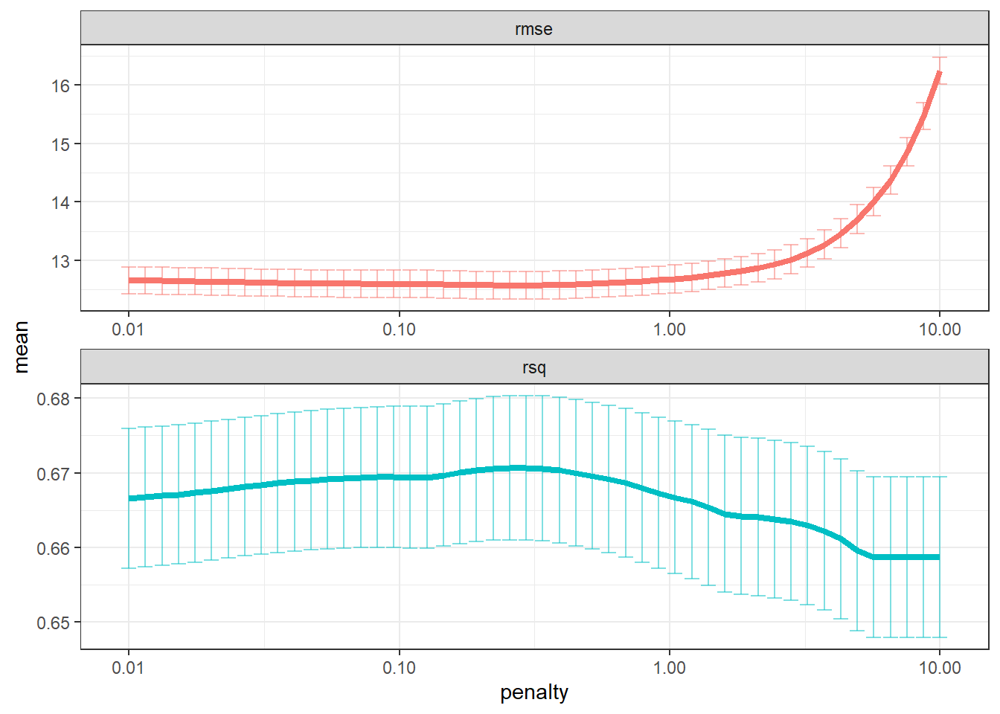
I have some choices of what do to next. Normally, what I’d do is select the simplest model within one standard error of the model with the lowest RMSE. I can do that with the select_by_one_std_err() function as shown below. Note the penalty value for that model and hold that thought.
lm_res %>% select_by_one_std_err(metric = "rmse", desc(penalty))I could also forget the “within one standard error” aspect and just select the model with the lowest RMSE (or I could select the least complex model that has no more than a certain percentage loss of RMSE). Select the model with the lowest error gives the folloing penalty value. Which one shoud I choose?
lowest_rmse <- lm_res %>% select_best("rmse")
lowest_rmseTake a look at the model object below. If I go with the 1SE lambda of 1.6, based on the degrees of freedom (Df) I’ll have only 2 or 3 predictors in the model (1.64 just happens to fall between the two penalty values below, so I’m not sure how many predictor will actually be selected). So out of about 100 predictors, only 2 or three will be selected. To me, that means a few variables dominate and the rest are just noise. With the lowest RMSE lambda value of 0.256, there will be 21-22 predictors selected. For the purpose of this post, I’m going to choose the lowest RMSE.
For the final fit, I finalize the work flow based on the lowest RMSE. Notice I also use data_split, which contains both the training and test data. From that fit, I get the RMSE and R-squared for the test data set. The RMSE is about 3 touchdowns, and the R-squared is alarmingly low.
lm_final_wf <-
lm_wflow %>%
finalize_workflow(lowest_rmse)
lm_final_fit <-
lm_final_wf %>%
last_fit(data_split)
lm_final_fit %>% collect_metrics()lm_final_fit %>%
extract_fit_parsnip()parsnip model object
Call: glmnet::glmnet(x = maybe_matrix(x), y = y, family = "gaussian", alpha = ~1)
Df %Dev Lambda
1 0 0.00 17.7300
2 1 11.16 16.1500
3 1 20.42 14.7200
4 1 28.11 13.4100
5 1 34.50 12.2200
6 1 39.80 11.1300
7 1 44.20 10.1500
8 1 47.85 9.2440
9 1 50.88 8.4230
10 1 53.40 7.6750
11 1 55.49 6.9930
12 1 57.23 6.3720
13 1 58.67 5.8060
14 2 59.87 5.2900
15 2 60.98 4.8200
16 2 61.90 4.3920
17 2 62.66 4.0020
18 2 63.29 3.6460
19 2 63.82 3.3220
20 2 64.25 3.0270
21 2 64.62 2.7580
22 2 64.92 2.5130
23 2 65.17 2.2900
24 2 65.37 2.0860
25 2 65.54 1.9010
26 2 65.69 1.7320
27 3 65.84 1.5780
28 3 66.00 1.4380
29 3 66.13 1.3100
30 4 66.24 1.1940
31 5 66.35 1.0880
32 6 66.45 0.9913
33 6 66.55 0.9032
34 6 66.63 0.8230
35 7 66.72 0.7498
36 7 66.80 0.6832
37 10 66.87 0.6225
38 13 66.95 0.5672
39 14 67.03 0.5168
40 15 67.10 0.4709
41 15 67.16 0.4291
42 17 67.21 0.3910
43 18 67.26 0.3562
44 20 67.30 0.3246
45 21 67.35 0.2958
46 21 67.38 0.2695
47 22 67.42 0.2455
48 22 67.45 0.2237
49 22 67.47 0.2039
50 24 67.50 0.1857
51 28 67.52 0.1692
52 32 67.55 0.1542
53 35 67.58 0.1405
54 39 67.64 0.1280
55 42 67.69 0.1167
56 43 67.74 0.1063
57 45 67.79 0.0969
58 46 67.83 0.0882
59 47 67.86 0.0804
60 51 67.90 0.0733
61 54 67.93 0.0668
62 54 67.96 0.0608
63 55 67.98 0.0554
64 56 68.00 0.0505
65 57 68.02 0.0460
66 59 68.05 0.0419
67 59 68.06 0.0382
68 59 68.07 0.0348
69 59 68.08 0.0317
70 61 68.09 0.0289
71 62 68.10 0.0263
72 64 68.10 0.0240
73 65 68.11 0.0219
74 68 68.11 0.0199
75 69 68.13 0.0181
76 70 68.13 0.0165
77 72 68.14 0.0151
78 72 68.15 0.0137
79 73 68.15 0.0125
80 74 68.16 0.0114
81 74 68.16 0.0104
82 74 68.17 0.0095
83 74 68.17 0.0086
84 75 68.17 0.0079
85 75 68.19 0.0072
86 76 68.19 0.0065Here I plot the selected predictors color coded by whether the coefficient is positive or negative. Clearly, diffMOV dominates all other variables. Other important variables include the spread and home field advantage. Everything after that is probably just noise.
lm_final_fit %>%
extract_fit_parsnip() %>%
vip::vi(lambda = lowest_rmse$penalty) %>%
mutate(
Importance = abs(Importance),
Variable = forcats::fct_reorder(Variable, Importance)
) %>%
filter(Importance != 0) %>%
ggplot(aes(x = Importance, y = Variable, fill = Sign)) +
geom_col() +
scale_x_continuous(expand = c(0, 0)) +
labs(y = NULL) +
theme_bw()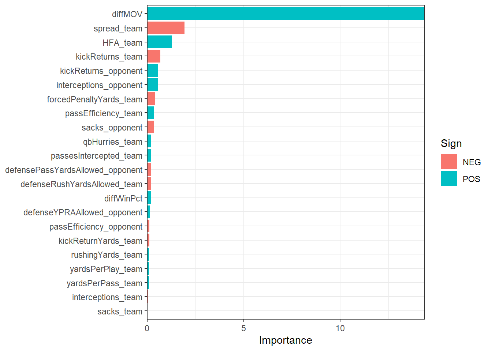
Well, what if we were to make predictions based off of this model? First I’ll make a scatter plot of predictions versus actual MOV.
lm_final_fit %>%
collect_predictions() %>%
ggplot() +
geom_abline(intercept = 0, slope = 1, color = "red") +
geom_point(aes(x=`.pred`, y=MOV_actual_team)) +
theme_bw() +
labs(title = "Linear Model Prediction Results",
x = "Predicted MOV",
y = "Actual MOV")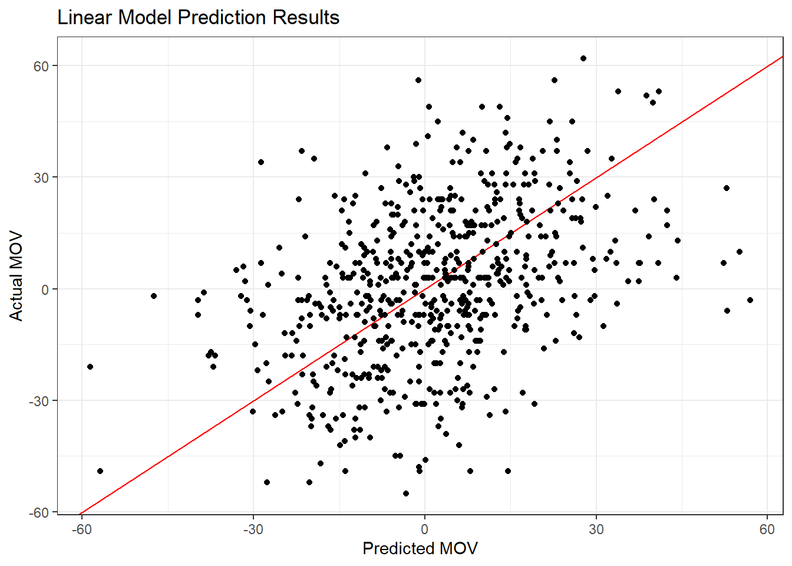
NThere’s a little bit of a trend there, but it looks more like a shotgun blast. Not surprising, though, given the RMSE and R-squared we saw earlier. Let’s see what percent of predictions were correct in a head-to-head sense - in other words, what percent predicted just the correct winner.
lm_final_fit %>%
collect_predictions() %>%
mutate(both_positive = `.pred` > 0 & MOV_actual_team > 0,
both_negative = `.pred` < 0 & MOV_actual_team < 0,
correct = both_positive + both_negative) %>%
summarize(sumCorrect = sum(correct)) / nrow(df21)Hmm… 64% Better than half, anyway, but not very impressive. Before I move on to another model type, I’ll grab the 22 predictors so I can remove everything else from the training and test data sets.
keep_vars <-
lm_final_fit %>%
extract_fit_parsnip() %>%
vip::vi(lambda = lowest_rmse$penalty) %>%
filter(Importance != 0) %>%
.$ VariableRandom Forest Model
I’ll try a few different models with the same data and see how they compare. I’ll start with a random forest model using the ranger package. I’ll use the same tidymodels procedure as above: create a recipe, model, and workflow, tune hyperparameters, and show the errors for the best model. This takes a while to execute on my laptop even when using all available cores.
cores <- parallel::detectCores()
# the recipe
rf_rec <-
recipe(MOV_actual_team ~ ., data = train_data %>% select(keep_vars, MOV_actual_team)) %>%
step_dummy(all_nominal_predictors()) %>%
step_zv(all_predictors())
# the model to tune
rf_mod <-
rand_forest(mtry = tune(), min_n = tune(), trees = 1000) %>%
set_engine("ranger", importance = "impurity", num.threads = cores) %>%
set_mode("regression")
# the workflow
rf_wflow <-
workflow() %>%
add_model(rf_mod) %>%
add_recipe(rf_rec)
# now set the seed for reproducability and tune the hyperparameters
set.seed(1234)
rf_fit <-
rf_wflow %>%
tune_grid(grid = 25,
control = control_grid(),
resamples = folds)
# take a look at the best models
rf_fit %>% show_best(metric = "rmse")There’s a nice autoplot() function that comes with tune (one of the tidymodels dependencies) that can be used with various tidymodels objects. Let’s check it out with rf_fit.
autoplot(rf_fit) + theme_bw()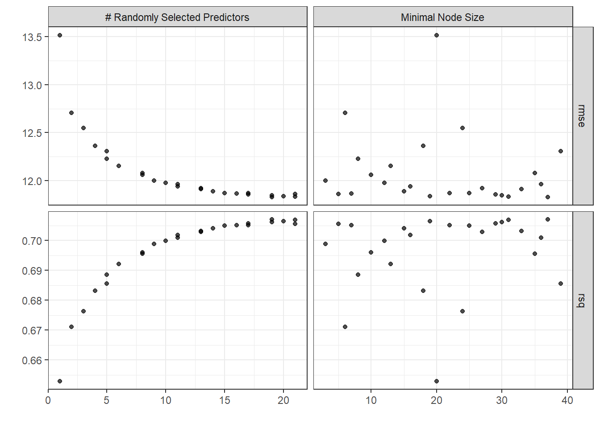
Looks like large numbers of mtry are good, but the error flattens out after 50 or so.
# final fit
last_rf_mod <-
rand_forest(mtry = 17, min_n = 22, trees = 1000) %>% # original
set_engine("ranger", importance = "impurity", num.threads = cores) %>%
set_mode("regression")
# the last workflow
last_rf_workflow <-
rf_wflow %>%
update_model(last_rf_mod)
# the last fit
set.seed(345)
last_rf_fit <-
last_rf_workflow %>%
last_fit(data_split)
last_rf_fit %>% collect_metrics()Still pretty bad. Let’s take a look at variable importance for this model.
last_rf_fit %>%
pluck(".workflow", 1) %>%
extract_fit_parsnip() %>%
vip::vip(num_features = 22) +
theme_bw()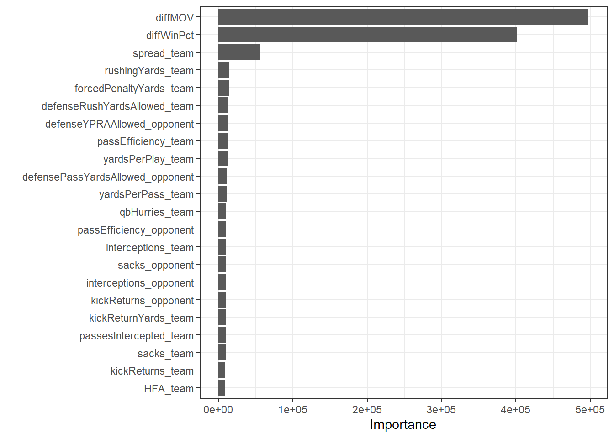
Really only three variables that are contributing much to the model. I’ll do predicted versus actual again and hope for less of a shotgun blast.
last_rf_fit %>%
collect_predictions() %>%
ggplot() +
geom_abline(intercept = 0, slope = 1, color = "red") +
geom_point(aes(x=`.pred`, y=MOV_actual_team)) +
theme_bw() +
labs(title = "Ranger Prediction Results",
x = "Predicted MOV",
y = "Actual MOV")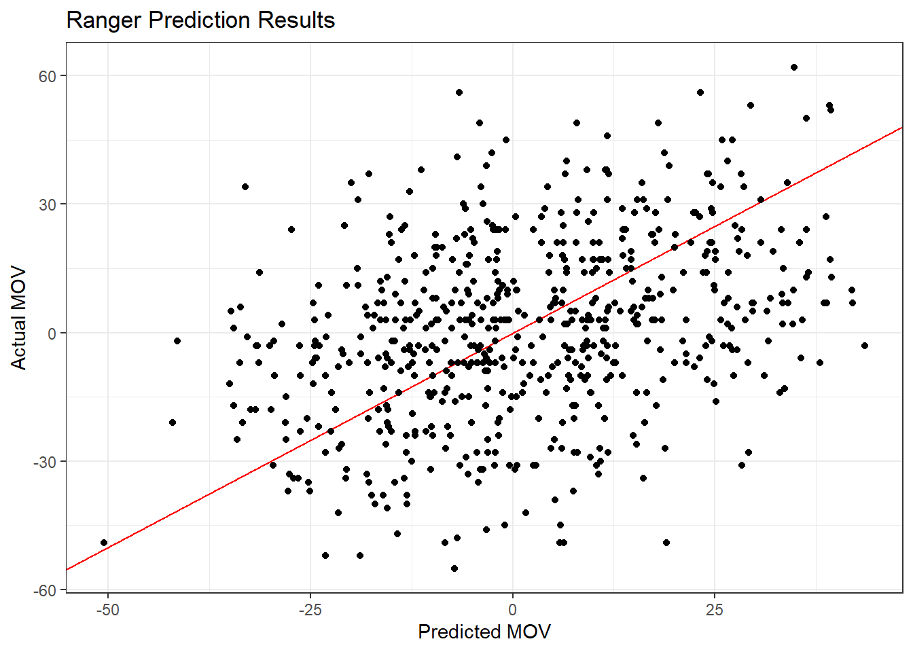
Maybe looks a little more elongated but that could be wishful thinking. How about the percent correct head to head?
last_rf_fit %>%
collect_predictions() %>%
mutate(both_positive = `.pred` > 0 & MOV_actual_team > 0,
both_negative = `.pred` < 0 & MOV_actual_team < 0,
correct = both_positive + both_negative) %>%
summarize(sumCorrect = sum(correct)) / nrow(df21)Slightly worse, but basically the same. Well, while I’m at it, I’ll look at predictions, actual MOV, and the spread.
last_rf_fit %>%
collect_predictions() %>%
mutate(spread_team = test_data$spread_team) %>%
select(`.pred`, MOV_actual_team, spread_team) %>%
head()The predictions don’t compare well, that’s for sure. Well, this may partially be the result of replacing NAs with 0s earlier, and I suspect I just have too many garbage predictors in the model. The authors were getting a head to head accuracy in the low 70’s, so there’s definite room for improvement. I’ll drive on anyway and look at teams that did a lot better or worse than predicted. Here I show only the extreme two ends. I plot (predicted - actual), so positive values are for teams that I predicted would win by a much larger margin than they actually did.
last_rf_fit %>%
collect_predictions() %>%
mutate(team = df21$school_team,
opp = df21$school_opponent,
spread_team = df21$spread_team) %>%
group_by(team) %>%
summarize(meanDiff = mean(`.pred` - MOV_actual_team)) %>%
arrange(meanDiff) %>%
mutate(team = forcats::fct_reorder(team, meanDiff)) %>%
filter(abs(meanDiff) > 7) %>%
ggplot() +
geom_col(aes(x=team, y=meanDiff)) +
coord_flip() +
theme_bw()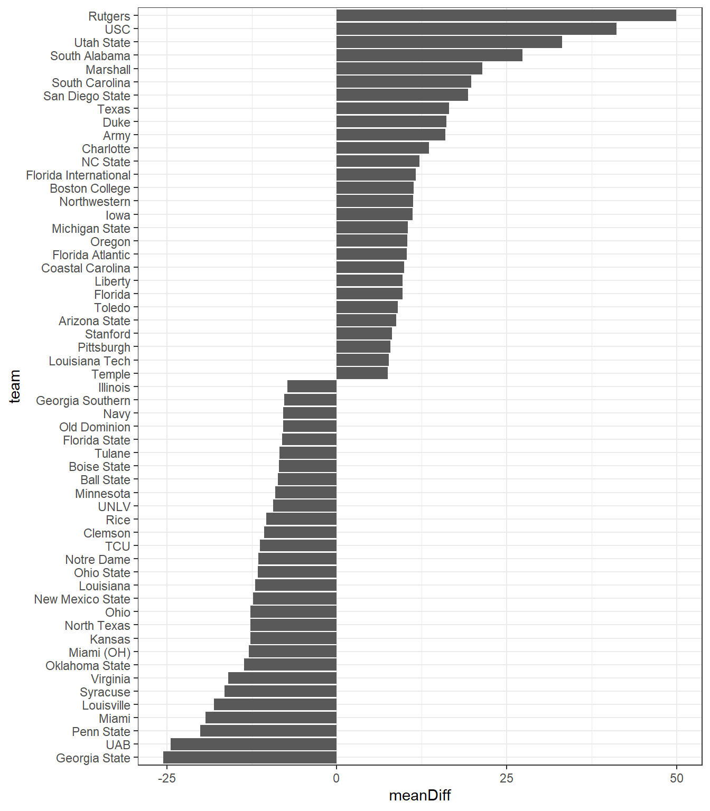
Finally, I’ll look at the proportion of games I correctly predicted over time. I’m curious if I do poorly early in the season and then improve, or if it’s relatively consistent. Quick note: the first time I made this plot, I was getting 100% accuracy in the early weeks, and then it got steadily worse over time. That was a giant red flag, and after thoroughly scrubbing my code, I found an error where some actual results had snuck into the test data. I’m glad I caught that!
last_rf_fit %>%
collect_predictions() %>%
bind_cols(test_data %>%
select(id, week, school_team, school_opponent) %>%
rename("ID" = "id")) %>%
mutate(incorrect = case_when(
`.pred` > 0 & MOV_actual_team < 0 ~ 1,
`.pred` < 0 & MOV_actual_team > 0 ~ 1,
TRUE ~ 0),
correct= case_when(
`.pred` > 0 & MOV_actual_team > 0 ~ 1,
`.pred` < 0 & MOV_actual_team < 0 ~ 1,
TRUE ~ 0)) %>%
group_by(week) %>%
summarize(sumIncorrect = sum(incorrect),
sumCorrect = sum(correct),
n = n(),
proportionCorrect = sumCorrect / n) %>%
ggplot() +
geom_col(aes(x=week, y=proportionCorrect)) +
theme_bw()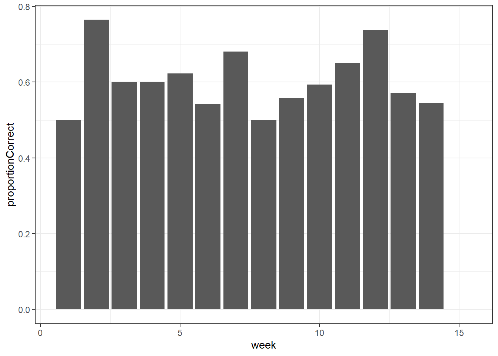
Looks reasonably consistent, so at least I know I fixed that error.
Gradient Boost Machine Model
I don’t have much hope that this will be any better than the last two models, but it’ll give me another rep with the tidymodels workflow. Note that I’m using the random forest recipe (rf_rec). In hindsight, the recipe is model agnostic, so I should have just called it something generic to avoid confusion.
set.seed(345)
gbm_mod <-
boost_tree(trees = 1000,
tree_depth = tune(),
min_n = tune(),
loss_reduction = tune(),
sample_size = tune(),
mtry = tune(),
learn_rate = tune()) %>%
set_engine("xgboost", num.threads = cores) %>%
set_mode("regression")
gbm_wflow <-
workflow() %>%
add_model(gbm_mod) %>%
add_recipe(rf_rec)
gbm_fit <-
gbm_wflow %>%
tune_grid(grid = 25,
control = control_grid(save_pred = TRUE),
resamples = folds)
gbm_fit %>% show_best(metric = "rmse")Then the final fit.
gbm_best <-
gbm_fit %>%
select_best(metric = "rmse")
# final fit
last_gbm_mod <-
boost_tree(trees = 1000,
tree_depth = gbm_best %>% .$tree_depth,
min_n = gbm_best %>% .$min_n,
loss_reduction = gbm_best %>% .$loss_reduction,
sample_size = gbm_best %>% .$sample_size,
mtry = gbm_best %>% .$mtry,
learn_rate = gbm_best %>% .$learn_rate) %>%
set_engine("xgboost", num.threads = cores) %>%
set_mode("regression")
# the last workflow
last_gbm_workflow <-
gbm_wflow %>%
update_model(last_gbm_mod)
# the last fit
set.seed(345)
last_gbm_fit <-
last_gbm_workflow %>%
last_fit(data_split)
# since I used data_split above, this includes the test data set
last_gbm_fit %>% collect_metrics()More of the same, of course, and now variable importance.
last_gbm_fit %>%
pluck(".workflow", 1) %>%
extract_fit_parsnip() %>%
vip::vip(num_features = 20) +
theme_bw()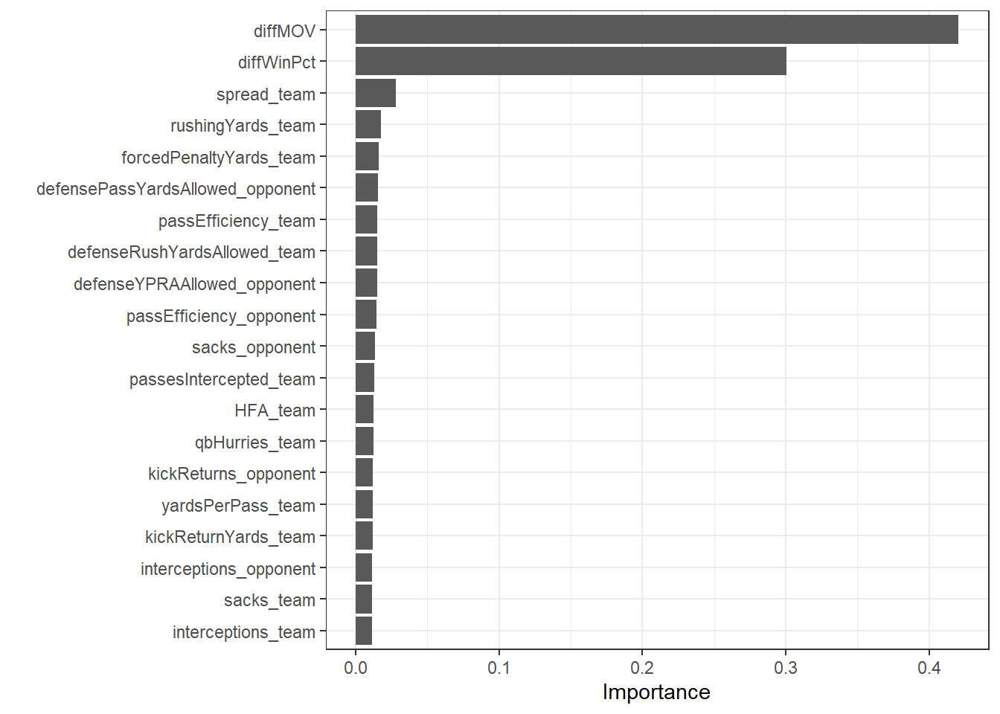
Yep, and now accuracy.
last_gbm_fit %>%
collect_predictions() %>%
mutate(both_positive = `.pred` > 0 & MOV_actual_team > 0,
both_negative = `.pred` < 0 & MOV_actual_team < 0,
correct = both_positive + both_negative) %>%
summarize(sumCorrect = sum(correct)) / nrow(df21)About the same as the others, so no surprise. Well, aside from demonstrating the garbage-in garbage-out principle, it was interesting to dip my toe in the waters of predictive modeling of sports events. As a bonus, I got some practice with tidymodels, which was great.
At this point in my weekend modeling, I paused and thought about what might have gone wrong and what might have gone right in the methodology I used. I also read this post about using a neural net to predict college football games. I tend to shy away from neural nets for regression problems. In my experience, they’re a pain to set up, take a long time to train, and I really haven’t seen them outperform the simpler, faster, and interpretable tree-based models.
Then I stumbled across this blog post from RStudio that demonstrated the use of tabnet, a neural net model developed by Google specifically for tabular data that incorporates some of the processes in tree-based models to improve interpretability. In the original paper, the authors also demonstrated that tabnet was on par, and often better, than the current go-to models like xgboost. So, time to give it a whack.
Neural Net Model
As I mentioned, I’m not too happy with the mess of predictors I’ve been using so far. Time for a fresh start using just a few predictors similar to the CollegeFootballData.com blog I just mentioned. I have lots of variables in my environment right now, so first I’m going to purge.
rm(list = ls())I’ll load some of the same data sets from disk that I used earlier and filter non-FBS games as before. However, this time, I’m only going to keep a few columns: id, school, conference, homeAway, points, week, and year.
gs <- readRDS("gameStats_full.RData")
gs <- type.convert(gs, as.is = TRUE)
# get the ID of non-FBS games
fbs <- readRDS("fbs_teams.RData")
fcsIDs <- gs %>% filter(!school %in% (fbs %>% .$school)) %>% .$id
# filter
gs <-
gs %>%
filter(!id %in% fcsIDs) %>%
select(id, school, conference, homeAway, points, week, year)I’ll create home and away dataframes again as earlier and add the Elo and neutral site data, and then recombine it all into a dataframe called pregame. I’ll calculate the margin of victory (mov) here, too. I noticed one of the away conference names was missing but was able to track down that it was a FBS independent team.
home <- gs %>% filter(homeAway == "home")
away <- gs %>% filter(homeAway == "away")
# get pre-game Elo and neutral vield data
eloSite <- readRDS("eloSite.RData") %>%
filter(!id %in% (fcsIDs)) %>%
tidyjson::as_tibble(eloSite)
# get pre-game spread
spread <- readRDS("spread.RData")
spread <- spread %>% filter(!id %in% (fcsIDs))
spread <- spread %>% drop_na()
pregame <- spread %>% left_join(eloSite, by = "id")
pregame <-
pregame %>%
left_join(home %>% select(-school, -homeAway), by = "id") %>%
rename("home_conference" = "conference", "home_points" = "points") %>%
left_join(away %>% select(-school, -year, -homeAway, -week), by = "id") %>%
rename("away_conference" = "conference", "away_points" = "points") %>%
mutate(mov = home_points - away_points) %>%
select(-home_points, -away_points) %>%
arrange(year) %>%
mutate(away_conference = replace_na(away_conference, "FBS Independents"))
head(pregame)I’m only working with 12 columns this time - well, 9 if you don’t count id, week, and year. I won’t use those for training or testing. They’re just to keep track of things. So it’s down to team, conference, spread, Elo, and the home field advantage thing, which I’ll address next.
Recall my first attempt was complicated and involved looping over game IDs. I came up with a much better way this time. I randomly select game IDs, then apply the HFA indicator in place. Way faster and a lot clearer what I’m doing.
set.seed(42)
idx <- sample(1:nrow(pregame), trunc(nrow(pregame) / 2))
pregame$HFA <- 0
pregame[idx, "HFA"] <- 1
pregame[-idx, "HFA"] <- -1
pregame[-idx, "mov"] <- pregame[-idx, "mov"]
pregame <- pregame %>% mutate(HFA = ifelse(neutral_site, 0, HFA))The last thing to do is turn the team names into factors.
pregame <-
pregame %>%
mutate(home_team = factor(home_team),
away_team = factor(away_team))That’s it! I’m ready to split the data in the training, test, and validation sets and get to model building.
data_split <-
initial_time_split(
pregame %>% select(-id, -year, -neutral_site, -week),
prop = 2656/3391)
train_data <- training(data_split)
test_data <- testing(data_split)
set.seed(234)
val_set <- validation_split(train_data, prop = 0.80)There are many hyperparameters to tune, and I’ll exclude epochs, batch_size, and virtual_batch_size just to speed this part up.
library(tabnet)
nn_rec <- recipe(mov ~ ., train_data) %>%
step_normalize(all_numeric(), -all_outcomes())
nn_mod <-
tabnet(epochs = 5,
batch_size = 256,
decision_width = tune(),
attention_width = tune(),
num_steps = tune(),
penalty = tune(),
virtual_batch_size = 64,
momentum = tune(),
feature_reusage = tune(),
learn_rate = tune()
) %>%
set_engine("torch") %>%
set_mode("regression")
nn_wf <-
workflow() %>%
add_model(nn_mod) %>%
add_recipe(nn_rec)
set.seed(42)
nn_fit <-
nn_wf %>%
tune_grid(val_set,
grid = 50,
control = control_grid())
nn_fit$.notes[[1]]$notecharacter(0)nn_fit %>% show_best(metric = "rmse")The final fit.
# with tuned parameters
last_nn_mod <-
tabnet(epochs = 15,
batch_size = 256,
decision_width = 15,
attention_width = 62,
num_steps = 8,
penalty = 0.1430669,
virtual_batch_size = 64,
momentum = 0.194,
feature_reusage = 1.148,
learn_rate = 0.02395
) %>%
set_engine("torch", verbose = TRUE) %>%
set_mode("regression")
# the last workflow
last_nn_workflow <-
nn_wf %>%
update_model(last_nn_mod)
# the last fit
set.seed(42)
last_nn_fit <-
last_nn_workflow %>%
last_fit(data_split)
# since I used data_split above, this includes the test data set
last_nn_fit %>% collect_metrics()Both metrics are quite a bit higher than what we’ve seen up to this point, so I’m optimistic this model will perform better.
last_nn_fit %>%
pluck(".workflow", 1) %>%
extract_fit_parsnip() %>%
vip::vip() +
theme_bw()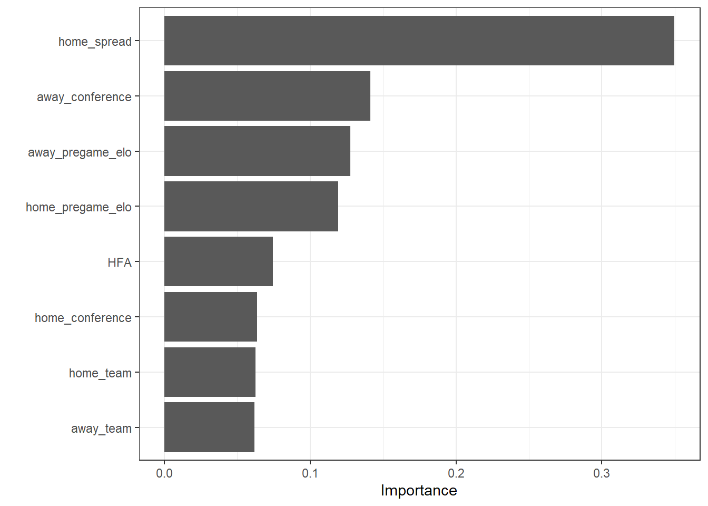
The model relies heavily on the spread, which makes sense since given that it’s hard to beat the spread, and I’m considering only a few other predictors.
# find percent I predicted the correct winner
last_nn_fit %>%
collect_predictions() %>%
mutate(both_positive = `.pred` > 0 & mov > 0,
both_negative = `.pred` < 0 & mov < 0,
correct = both_positive + both_negative) %>%
summarize(Correct = sum(correct)) / nrow(test_data)This model correctly predicts 72.3% of the game winners, compared to the ~ 60% for the earlier models. How does that compare to the spread?
# how does the spread do?
last_nn_fit %>%
collect_predictions() %>%
mutate(spread = -test_data$home_spread,
both_positive = spread > 0 & mov > 0,
both_negative = spread < 0 & mov < 0,
correct = both_positive + both_negative) %>%
summarize(Correct = sum(correct)) / nrow(test_data)Not surprising that it’s almost the same. Really at this point, this model basically is the spread. Obviously, if we want to beat the spread, we need to improve on this. Let’s check the predicted vs. actual raw values.
last_nn_fit %>%
collect_predictions() %>%
head(10)And now let’s plot them.
last_nn_fit %>%
collect_predictions() %>%
ggplot() +
geom_abline(intercept = 0, slope = 1, color = "red") +
geom_point(aes(x=`.pred`, y=mov)) +
theme_bw() +
labs(title = "NN Prediction Results",
x = "Predicted MOV",
y = "Actual MOV")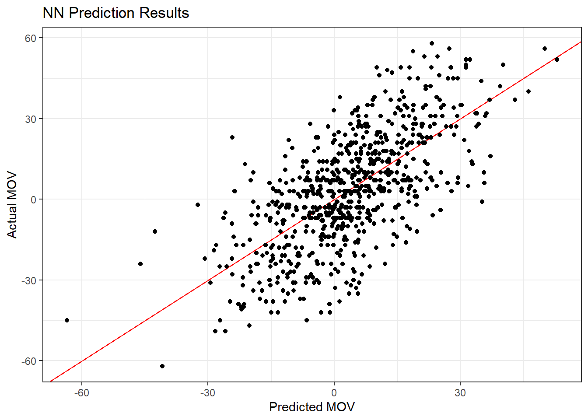
Interpretability Plots
Earlier I mentioned that tabnet models were developed to be interpretable. The following plot shows the first 50 games in the test set with games on the x axis. For these games, it seems the Elo scores were the biggest contributors. Interesting. I wonder why we don’t see more of an impact from the spread.
exp_fit <-
last_nn_fit %>%
pluck(".workflow", 1) %>%
extract_fit_parsnip()
ex_fit <- tabnet_explain(exp_fit$fit, test_data[1:50, ])
autoplot(ex_fit) +
labs(x = "Game", y = "Predictor")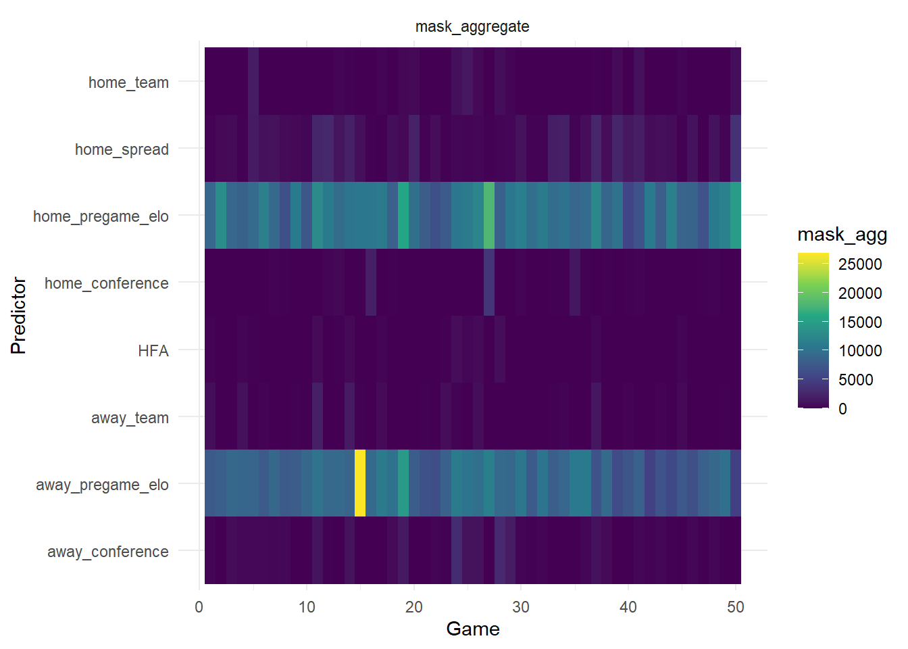
Next, for the same 50 games, we see that different predictors are important in different steps. Here we see that spread comes into play mostly in the 7th and 8th step.
# PER-STEP, OBSERVATION-LEVEL FEATURE IMPORTANCES
autoplot(ex_fit, type="steps") +
labs(x = "Game", y = "Predictor")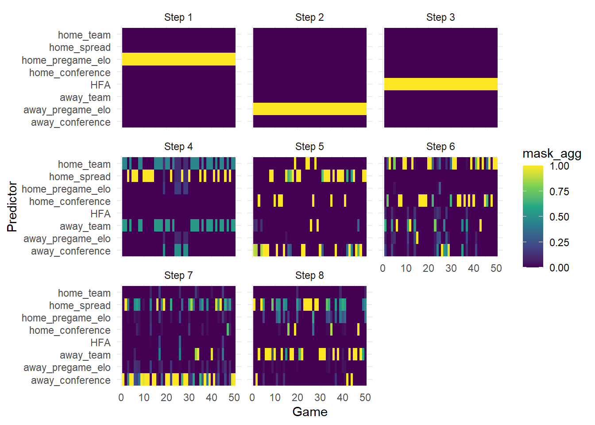
Next Steps
While tabnet looks promising, I can’t directly compare its performance with the other models in this post because I used a different data set for it. I saw in the tidymodels docs that there’s a way to do model comparison using work flow sets, so I’ll check that out in another post.